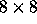
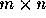
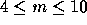
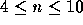

| Chess |
Almost everyone knows the problem of putting eight queens on an  chessboard such that no Queen can take another Queen. Jan Timman (a famous Dutch chessplayer) wants to know the maximum number of chesspieces of one kind which can be put on an  board with a certain size such that no piece can take another. Because it's rather difficult to find a solution by hand, he asks your help to solve the problem.
He doesn't need to know the answer for every piece. Pawns seems rather uninteresting and he doesn't like Bishops anyway. He only wants to know how many Rooks, Knights, Queens or Kings can be placed on one board, such that one piece can't take any other.
The first line of input contains the number of problems. A problem is stated on one line and consists of one character from the following set r, k, Q, K, meaning respectively the chesspieces Rook, Knight, Queen or King. The character is followed by the integers m (  ) and n (  ), meaning the number of rows and the number of columns or the board.
For each problem specification in the input your program should output the maximum number of chesspieces which can be put on a board with the given formats so they are not in position to take any other piece.
Note: The bottom left square is 1, 1.
2 r 6 7 k 8 8
6 32